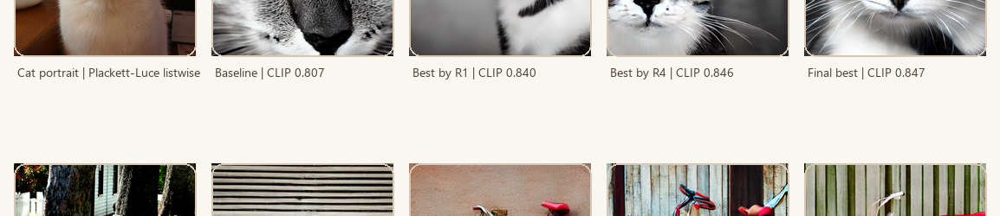

Visual abstract option A
StableSteering: preference-guided iterative refinement from a fixed prompt
The method treats refinement as repeated proposal, comparison, and steering-state update. The right column grounds the concept with a real hidden-target recovery example and the main quantitative highlight.
Representative target-recovery run

A real run can move from a prompt-only baseline toward a visually closer image over repeated rounds without rewriting the prompt at every step.
Main quantitative highlight
Repeated oracle study
CLIP 0.828 → 0.881
Independent image metric
DINOv2 0.452 → 0.595
Main interpretation
Progress depends on proposal geometry, preference aggregation, and incumbent handling.